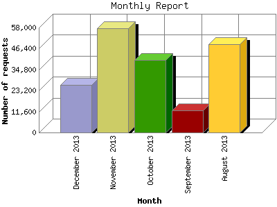

The Monthly Report identifies activity for each month in the report
time frame. Remember that each page hit can result in several server requests
as the images for each page are loaded.
Note: Depending on the
report time frame, the first and last months may not represent a complete
month's worth of data, resulting in lower hits.

| Month | Number of requests | Number of page requests | |
|---|---|---|---|
| 1. | August 2013 | 48,938 | 957 |
| 2. | September 2013 | 12,275 | 739 |
| 3. | October 2013 | 40,031 | 2,472 |
| 4. | November 2013 | 57,691 | 3,720 |
| 5. | December 2013 | 26,470 | 1,089 |
Most active month November 2013 : 3,720 pages sent. 57,691 requests handled.
Monthly average: 1,795 pages sent. 37,081 requests handled.
This report was generated on December 12, 2013 02:08.
Report time frame August 3, 2013 03:16 to December 10, 2013 23:49.
| Web statistics report produced by: analog 6.0 / Report Magic 2.21 |